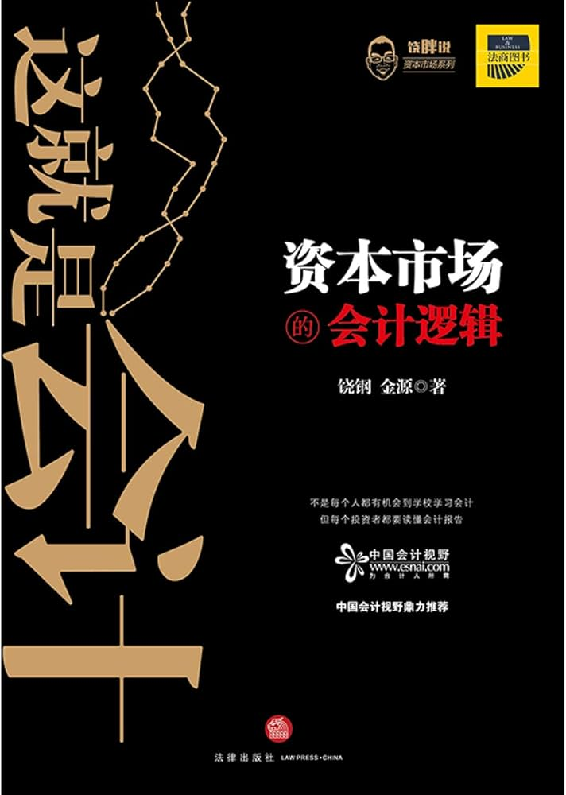

|  |
这就是会计：资本市场的会计逻辑
饶钢 金源
|
第一章 现金是真的吗？会计视角和“眼见为实”
第一节 每股现金打六折的股票
第二节 财务报表上的现金是事实吗？
第三节 眼见为实的思维误区
第四节 眼见为实和人的思维模式
第五节 九好集团虚构3亿元现金案例
第六节 龙力生物的现金去哪里了？
第二章 这家企业能投资吗？会计信息和其他信息的拼图
引 子
第一节 分析框架和套路
第二节 一个分析的案例
第三章 会计的世界
引 子
第一节 投影
第二节 会计的“逻辑结构”
第三节 会计的思考
第四章 审计的故事
引 子
第一节 审计在什么时候出场？
第二节 老高和审计打交道的故事
第三节 审计是个生意
第四节 审计意见
第五节 审计还是尽职调查？
第五章 内控的故事
引 子
第一节 中小民营企业准备IPO的内控问题
第二节 老高的内控往事
第六章 存货的故事
引 子
第一节 存货的会计知识准备
第二节 史蒂文的存货往事
第三节 扇贝和存货
第七章 利润！利润！利润！
引 子
第一节 利润那些事
第二节 扣非后净利润，一个由会计师判定的“非会计项目”
第三节 利润表最后几行的小知识
第八章 收入和成本费用
引 子 收入是商业的本质
第一节 收入
第二节 成本费用
第九章 资产炼金术
第一节 长期投资的会计戏法
第二节 研发费资本化
第三节 商誉是个“洋泡泡”
第四节 吃瓜吃出利润来
第十章 杠杆的诱惑
引 子
第一节 借来的杠杆
第二节 企业加杠杆的工具
第三节 杠杆故事
第十一章 要命的现金流
第一节 史蒂文的救火生涯
第二节 现金流的世界
第三节 商业模式与现金流
第十二章 港股上市热点财务问题
第一节 优先股
第二节 VIE架构
第三节 员工股权激励
后记
作者饶钢，确实是资深行业内人士。拷贝老唐的原创没标明出处；雅戈尔案例讲解会计魔术时有比较严重的错误。
书里有大量篇幅讲哲学、思考范畴的内容以及一些太偏理论的，甚至多处出现重复例子，怀疑是作者自己审稿没查重，另外书里有很多大段的对会计准则原文的复制，这些都被我迅速浏览粗略阅读就跳过了。
书里提到的例子倒是可以多看几遍。最后第12章关于港股上市的优先股、VIE架构和员工股权激励基本都跳过了，等需要的时候再看吧。